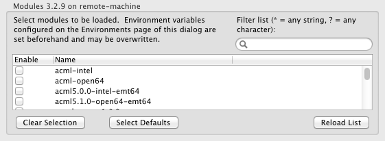

Configuring Environment Modules
Environment modules allow users to switch between different versions of
compilers, libraries, and other installed software on a supercomputer.
On the command line, environment modules are typically configured using commands like
module load gcc/4.6.2 or module swap PrgEnv/cray PrgEnv/pgi.
PTP provides the ability to configure a set of
modules to be loaded when a synchronized C/C++ or Fortran project is built.
Module commands can be entered manually -- just as you would enter at the command
line -- or they can be configured using a graphical interface.
Note: The following instructions apply only to synchronized projects.
Currently, it is not possible to configure modules for local or remote projects.
To configure environment modules used to build a synchronized C/C++ or Fortran project:
- In the Project Explorer view, right-click on a C/C++ or Fortran project.
- In the context menu, select Properties. This will open the Project Properties dialog.
- In the tree on the left, navigate to C/C++ Build > Environment Management.
- Select Use an environment management system to customize the remote build environment.
- If a message appears reading The remote environment (connection name) is not connected,
click the Connect button.
If no such message appears, proceed to the next step.
- Within 10-15 seconds, one of one of the following will appear.
- If a message appears reading
(connection name) does not have a supported environment management system installed,
you will need to specify environment configuration commands manually.
Click here for further instructions.
- If a check list with a list of modules appears,
you may select the modules to be loaded from the check list.
Click here for further instructions.
- After you have configured the environment modules for your build,
click the OK button to save the configuration and close the Project Properties dialog.
Configuring Environment Modules Using the Module List
PTP allows modules to be configured using a check list when the remote
machine runs one of the following environment management systems:
- Modules - C or Tcl versions
- Lmod - Modules based on Lua
- SoftEnv

The module configuration area contains the following elements.
- The list displays all of the modules available on the remote machine.
If a module is checked, that module will be loaded when the project is
built. If a module is not checked, PTP will ensure that the module is
not loaded when the project is built.
- A Clear Selection button clears all of the check boxes in the
module list.
- A Select Defaults button restores the list so that only the
default modules are checked. The "default modules" are
those that are loaded automatically when a new Bash login shell is
launched on the remote machine. (Some systems allow users to customize
their default modules by creating a ~/.modules file on the remote
machine.)
- A Reload List button reloads the list of available modules from the
remote machine. This is useful if the set of available modules changes
while the dialog box is open, or if communication problems prevented the
list from loading correctly.
- A Filter List text field allows you to temporarily display only a
subset of the available modules. This is useful for quickly finding
modules with a particular name. Note that entering filter text does
not change what modules are checked; rather, it temporarily removes
some modules from view. For further instructions,
see below.
Using the Filter List Text Field
The Filter List text field can be used to temporarily display only
modules with a particular name. (Entering text in this field does not affect
what modules are selected; it simply hides some entries from view until the
filter text is cleared.)
- Typing text in the field restricts the display to only those modules whose
names begin with that text. For example:
- Entering "open" would display
modules such as open64/4.5.1, open64/5.0, openmpi-1.4.3-intel-12.0.4,
and openmpi_gcc-1.4.2 -- i.e., modules whose names begin with "open."
- An asterisk (*) in the text matches any text (or none at all). For example:
- Entering "*gcc" would match modules named gcc, gcc/4.6.2, openmpi_gcc-1.4.2,
and even R/2.14.2-gcc -- i.e., any module whose name contains "gcc".
- Entering "metis/*/gnu" would match metis/4.0/gnu and metis/5.0/gnu
(but not metis/4.0/intel or metis/5.0/intel).
- Entering "m*pi" would match mpi, mpip, mvapich2 -- modules whose
names start with an m and have pi later in the name.
- A question mark (?) in the text matches exactly one character. For example:
- Entering "openmpi-1.?-intel" would match a module named openmpi-1.6-intel-12.0.4
but not openmpi-1.4.3-intel-12.0.4.)
Configuring Environment Modules Manually
To configure environment modules manually:
- Select Manually specify environment configuration commands.
- A text box will appear. If the check list was previously visible, the text
box will contain the commands needed to configure the modules according to
what was selected in the checklist.
- Enter Bash shell commands necessary to configure the environment, one per
line.
Back to Top | Back to Table of Contents